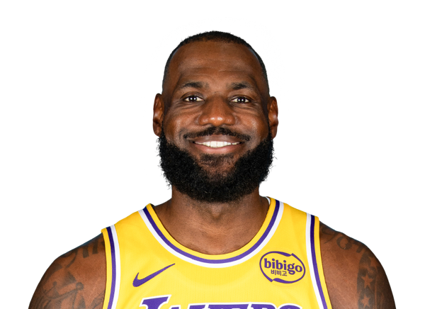
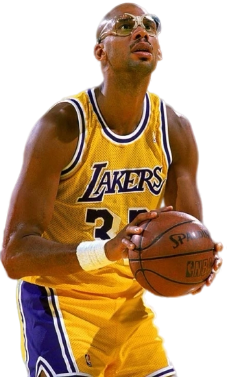
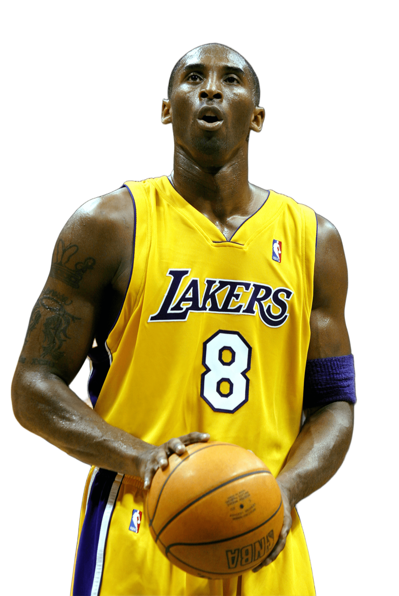

Los 5 Jugadores más influyentes de la Historia
1. Michael Jordan
- Impacto: Considerado el mejor de todos los tiempos por su dominio absoluto en los años 90.
- Dato Clave: Ganó 6 campeonatos con los Chicago Bulls, logrando dos "three-peats".
- Logros: 6 veces MVP de las Finales y 5 veces MVP de la temporada.

2. LeBron James
- Impacto: Famoso por su increíble longevidad y por ser el máximo anotador de todos los tiempos.
- Dato Clave: Ha ganado 4 campeonatos con tres equipos diferentes (Heat, Cavs y Lakers).
- Logros: 20 veces All-Star y 4 veces MVP de la temporada.

3. Kareem Abdul-Jabbar
- Impacto: Dominó la liga con su tiro indefendible, el "Skyhook".
- Dato Clave: Posee el récord de más premios MVP de la temporada regular con 6 trofeos.
- Logros: Ganó 6 campeonatos de la NBA entre Bucks y Lakers.

4. Bill Russell
- Impacto: El mayor ganador de la historia del deporte profesional estadounidense.
- Dato Clave: Consiguió 11 anillos de campeón en 13 temporadas con los Celtics.
- Logros: 5 veces MVP y el trofeo de las Finales lleva su nombre.

5. Kobe Bryant
- Impacto: Referente mundial por su "Mamba Mentality" y su ética de trabajo.
- Dato Clave: Jugó 20 temporadas en los Lakers, ganando 5 campeonatos.
- Logros: 2 veces máximo anotador y 18 veces All-Star.
